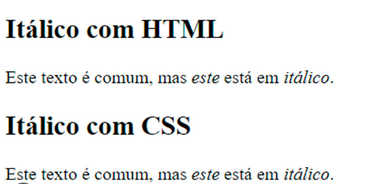

O elemento HTML i> representa uma parte do texto que é destacada do restante por algum motivo, por exemplo, termos técnicos, expressões de outros idiomas ou pensamentos de personagens fictícios. Normalmente, é apresentado com o uso do tipo "itálico".
Mozilla